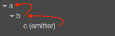

监听和发射事件
监听事件
事件处理是在节点（cc.Node）中完成的。对于组件，可以通过访问节点 this.node 来注册和监听事件。监听事件可以
通过 this.node.on() 函数来注册，方法如下：
cc.Class({
extends: cc.Component,
properties: {
},
onLoad: function () {
this.node.on('mousedown', function ( event ) {
console.log('Hello!');
});
},
});值得一提的是，事件监听函数 on 可以传第三个参数 target，用于绑定响应函数的调用者。以下两种调用方式，
效果上是相同的：
// 使用函数绑定
this.node.on('mousedown', function ( event ) {
this.enabled = false;
}.bind(this));
// 使用第三个参数
this.node.on('mousedown', function (event) {
this.enabled = false;
}, this);除了使用 on 监听，我们还可以使用 once 方法。once 监听在监听函数响应后就会关闭监听事件。
关闭监听
当我们不再关心某个事件时，我们可以使用 off 方法关闭对应的监听事件。需要注意的是，off 方法的
参数必须和 on 方法的参数一一对应，才能完成关闭。
我们推荐的书写方法如下：
cc.Class({
extends: cc.Component,
_sayHello: function () {
console.log('Hello World');
},
onEnable: function () {
this.node.on('foobar', this._sayHello, this);
},
onDisable: function () {
this.node.off('foobar', this._sayHello, this);
},
});发射事件
我们可以通过两种方式发射事件：emit 和 dispatchEvent。两者的区别在于，后者可以做事件传递。
我们先通过一个简单的例子来了解 emit 事件：
cc.Class({
extends: cc.Component,
onLoad: function () {
this.node.on('say-hello', function (event) {
console.log(event.detail.msg);
});
},
start: function () {
this.node.emit('say-hello', {
msg: 'Hello, this is Cocos Creator',
});
},
});派送事件
上文提到了 dispatchEvent 方法，通过该方法发射的事件，会进入事件派送阶段。在 Cocos Creator
的事件派送系统中，我们采用冒泡派送的方式。冒泡派送会将事件从事件发起节点，不断地向上传递给他的父级
节点，直到到达根节点或者在某个节点的响应函数中做了中断处理 event.stopPropagation()。

如上图所示，当我们从节点 c 发送事件 “foobar”，倘若节点 a，b 均做了 “foobar” 事件的监听，则 事件会经由 c 依次传递给 b，a 节点。如：
// 节点 c 的组件脚本中
this.node.dispatchEvent( new cc.Event('foobar', true) );如果我们希望在 b 节点截获事件后就不再将事件传递，我们可以通过调用 event.stopPropagation() 函数
来完成。具体方法如下：
// 节点 b 的组件脚本中
this.node.on('foobar', function (event) {
event.stopPropagation();
});事件对象
在事件监听回调中，开发者会接收到一个 cc.Event 类型的事件对象 event，stopPropagation 就是 cc.Event 的标准 API，其它重要的 API 包含：
| API 名 | 类型 | 意义 |
|---|---|---|
type |
String |
事件的类型（事件名） |
target |
cc.Node |
接收到事件的原始对象 |
currentTarget |
cc.Node |
接收到事件的当前对象，事件在冒泡阶段当前对象可能与原始对象不同 |
getType |
Funciton |
获取事件的类型 |
stopPropagation |
Function |
停止冒泡阶段，事件将不会继续向父节点传递，当前节点的剩余监听器仍然会接收到事件 |
stopPropagationImmediate |
Function |
立即停止事件的传递，事件将不会传给父节点以及当前节点的剩余监听器 |
getCurrentTarget |
Function |
获取当前接收到事件的目标节点 |
detail |
Function |
自定义事件的信息（属于 cc.Event.EventCustom） |
setUserData |
Function |
设置自定义事件的信息（属于 cc.Event.EventCustom） |
getUserData |
Function |
获取自定义事件的信息（属于 cc.Event.EventCustom） |
完整的 API 列表可以参考 cc.Event 及其子类的 API 文档。
系统内置事件
以上是通用的事件监听和发射规则，在 Cocos Creator 中为 cc.Node 内置了鼠标、触摸等系统事件，可参考系统内置事件文档。